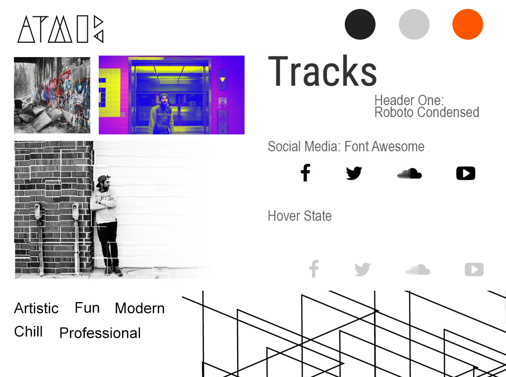

Goal
The goal of this project was to design and develop a logo and fully responsive website for Chicago based rap artist- AtMos.
Design
Style Tile
Mobile and Desktop Layouts

Recap
One of the key development accomplishments of this project was to embed audio files to decrease load time and increase performance of the website. Another accomplishment was to make the site fully responsive. This project came with more visual design challenges than front end challenges. The key challenge was to make it seem like this up and coming artist has a lot of content. My solution was to put all content on one page and get content from his social media sites. Another visual design challenge was to properly represent the artist's personality. Ultimately, the artist approved my designs and agreed how he was represented so I could build the full site according to my design.